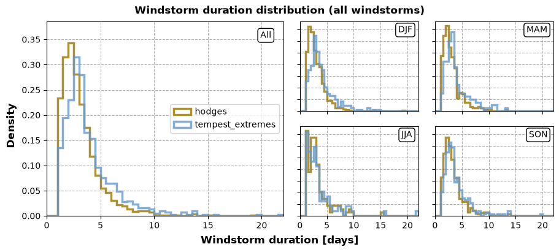
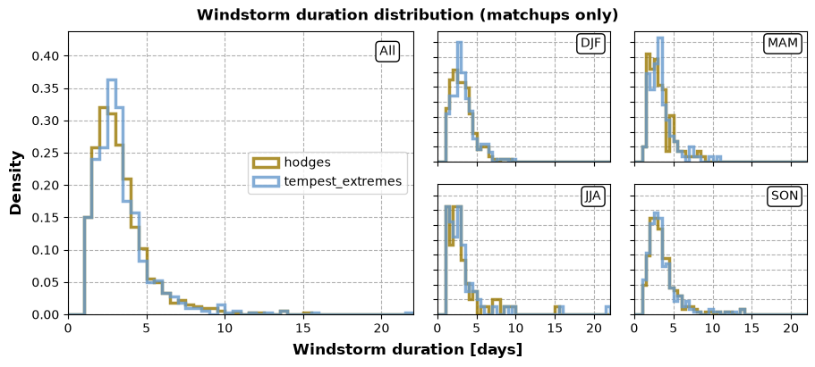
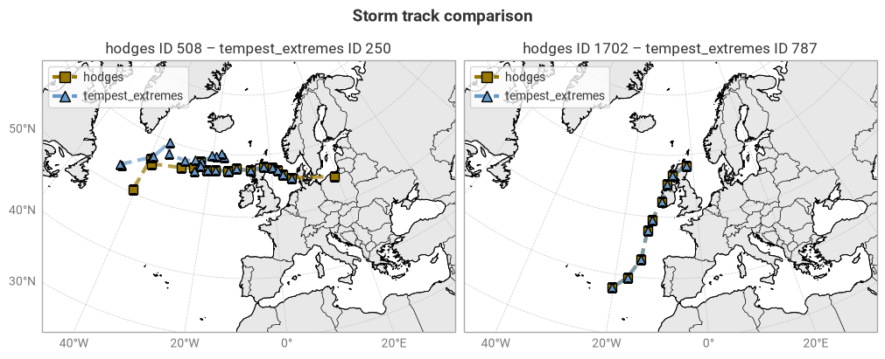
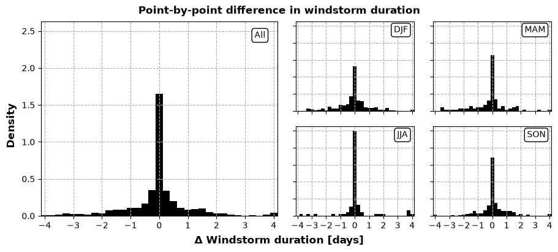
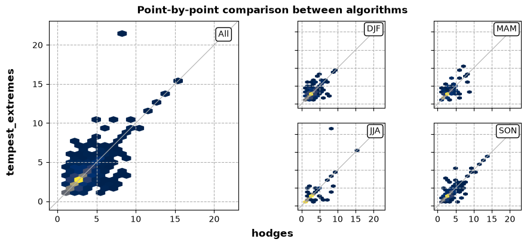

6.2. Consistency between windstorm tracking algorithms – Duration#
Production date: 2026-11-DD.
🌍 Use case: C3S Enhanced Windstorm Service (EWS)#
❓ Quality assessment question#
How do the tracking algorithms included in the Windstorm tracks and footprints dataset (Hodges, TempestExtremes) compare in terms of windstorm duration?
As part of the Copernicus Climate Change Service’s (C3S) Enhanced Windstorm Service (EWS), the Windstorm tracks and footprints derived from reanalysis over Europe between 1940 to present dataset is intended to help users in the insurance sector better understand the risk caused by European windstorms or extra-tropical cyclones (ETCs). ETCs are large low-pressure systems in mid-latitude regions associated with high winds and heavy rain [Walker+20]. These windstorms can cause severe socio-economic damages, with costs in the millions of euros and fatalities ranging from individuals to thousands [Garnier+18].
To generate this dataset, two windstorm tracking algorithms – Hodges/TRACK [Hoskins+02, Hodges+99, Hodges+95] and TempestExtremes [Ullrich+21] – were applied to historical meteorological data from ECMWF’s fifth-generation reanalysis ERA5 [Hersbach+20] to detect windstorm tracks. The resulting dataset contains three products, namely the windstorm tracks found by both algorithms, the associated footprint of each windstorm, and yearly summary indicators for administrative regions.
Because the tracking algorithms have different approaches for detecting windstorms, with Hodges using 3-hourly 850 hPa relative vorticity and TempestExtremes using 6-hourly mean sea level pressure (MSLP), they are intended to be complementary to each another. ETCs are highly complex and diverse systems and different tracking algorithms have different sensitivities, strengths, and limitations [Neu+13]. For example, the MSLP approach generally represents low-frequency, large-scale features, while vorticity represents high-frequency, small-scale features [Neu+13, Hodges+03]
Here, we compare the outputs of both algorithms in terms of duration, i.e. when individual windstorm tracks are first/last detected and their total duration. This comparison is performed as an internal consistency check, rather than a validation using external data. The aim is to provide guidance on the choice of algorithm and the consequences of using one over the other, or both at the same time.
📢 Quality assessment statement#
These are the key outcomes of this assessment
The EWS Windstorm tracks and footprints dataset contains around two thousand windstorms tracked with two different algorithms (Hodges and TempestExtremes). For 1940–2025, the distributions of windstorm durations from both algorithms peak around 2.8–3.9 days with some seasonal variation. Hodges tends to detect more, shorter windstorms that are not detected by TempestExtremes, skewing the Hodges distribution to the shorter end.
For matched-up windstorm tracks, both algorithms find similar durations, with a median bias of 0 (interquartile range –0.25 to +0.25). There are some outliers with larger differences, up to several days.
When analysing windstorm duration statistics, data from either tracking algorithm can be used with equal confidence, as they are internally consistent for matched-up windstorms. However, differences in sensitivity may skew statistics when only using a single algorithm.
📋 Methodology#
This notebook examines the consistency in windstorm characteristics between the two tracking algorithms used in the Windstorm tracks and footprints derived from reanalysis over Europe between 1940 to present dataset. Here, we focus on the duration of windstorms as detected by each algorithm, by investigating the individual windstorm tracks.
The analysis and results are organised in the following steps, which are detailed in the sections below:
Import all required libraries.
Define helper functions.
Compare distribution of lifetimes for all windstorms between two algorithms.
Compare distribution of lifetimes between matchups between two algorithms.
📈 Analysis and results#
1. Code setup#
Note
This notebook uses earthkit for downloading (earthkit-data) and visualising (earthkit-plots) data. Because earthkit is in active development, some functionality may change after this notebook is published. If any part of the code stops functioning, please raise an issue on our GitHub repository so it can be fixed.
Import required libraries#
In this section, we import all the relevant packages needed for running the notebook.
Helper functions#
This section defines some functions and variables used in the following analysis, allowing code cells in later sections to be shorter and ensuring consistency.
Data downloading & (pre-)processing#
The following cell contains some pre-defined constants for convenience, such as a list of variable names in the data:
The following cell provides some convenience functions for working with Pandas DataFrames, such as manipulating their indices:
Statistics#
The following functions calculate and display statistics on windstorm track duration:
The following functions find and analyse track matchups following the method described in [Hodges+03]:
The following functions perform point-to-point comparisons of windstorms found by both tracking algorithms:
Visualisation#
The following cell defines the styles used for the different algorithms in line plots:
The following cell contains some base helper functions (e.g. displaying in Jupyter Notebook or Jupyter Book style):
The following functions are also base helper functions, but specific to geospatial plots. Administrative boundaries are downloaded from the Geographic Information System of the Commission (GISCO) through earthkit-plots, and are © EuroGeographics.
The following functions display the distribution of windstorm durations:
The following functions display geospatial comparisons of individual windstorm tracks:
The following functions display comparisons of windstorm track duration:
2. Windstorm duration#
We compare the windstorm tracks found by the Hodges and TempestExtremes algorithms. The following cell defines the years for which we will download data; by default, this is 1940–2025, but these years can be modified below when running the notebook yourself:
Download windstorm tracks#
We download the windstorm tracks from the sis-european-wind-storm-reanalysis CDS entry. This is a simple table which can be loaded into a Pandas DataFrame. For each algorithm (Hodges, TempestExtremes), this table contains all timestamps with corresponding location (latitude, longitude) and some fields describing physical characteristics at that timestamp and location (see the Product User Guide for details).
Note that the id column in this table is defined separately for each algorithm.
For example, the windstorm with id 42 in the Hodges list is likely not the same as the windstorm with that id in the TempestExtremes list.
This notebook uses earthkit-data to download files from the CDS. If you intend to run this notebook multiple times, it is highly recommended that you enable caching to prevent having to download the same files multiple times. If you prefer not to use earthkit, the following requests can also be used with the cdsapi module. In either case (earthkit-data or cdsapi), it is required to set up a CDS account and API key as explained on the CDS website.
| time | latitude | longitude | fg10 | lsm | msl | ||
|---|---|---|---|---|---|---|---|
| algorithm | id | ||||||
| hodges | 1 | 1940-02-22 00:00:00 | 63.25 | -24.00 | 10.452867 | 0.000000 | 98962.875 |
| 1 | 1940-02-22 06:00:00 | 63.50 | -25.00 | 12.599429 | 0.000000 | 98905.190 | |
| 1 | 1940-02-22 12:00:00 | 62.75 | -11.25 | 5.919555 | 0.000000 | 98809.125 | |
| 1 | 1940-02-22 18:00:00 | 63.00 | -12.00 | 7.741296 | 0.000000 | 98755.560 | |
| 1 | 1940-02-23 00:00:00 | 62.75 | -12.25 | 4.190840 | 0.000000 | 98655.310 | |
| ... | ... | ... | ... | ... | ... | ... | ... |
| tempest_extremes | 871 | 2025-10-29 00:00:00 | 57.50 | -7.50 | 7.256220 | 0.203919 | 98960.750 |
| 871 | 2025-10-29 06:00:00 | 57.75 | -6.50 | 5.611463 | 0.058715 | 98859.560 | |
| 871 | 2025-10-29 12:00:00 | 58.50 | -2.25 | 7.861186 | 0.000000 | 98899.120 | |
| 871 | 2025-10-30 12:00:00 | 55.75 | 15.75 | 7.850687 | 0.000000 | 98927.310 | |
| 871 | 2025-10-30 18:00:00 | 56.50 | 19.00 | 5.625481 | 0.000000 | 98920.690 |
34254 rows × 6 columns
Calculate windstorm duration#
We calculate windstorm duration as simply the time difference between the first and last detections of a given windstorm ID:
| time_start | time_end | duration | season | ||
|---|---|---|---|---|---|
| algorithm | id | ||||
| hodges | 1 | 1940-02-22 00:00:00 | 1940-02-24 12:00:00 | 2.50 | DJF |
| 2 | 1940-03-12 00:00:00 | 1940-03-15 06:00:00 | 3.25 | MAM | |
| 3 | 1940-03-14 00:00:00 | 1940-03-15 18:00:00 | 1.75 | MAM | |
| 4 | 1940-03-17 12:00:00 | 1940-03-20 12:00:00 | 3.00 | MAM | |
| 5 | 1940-04-06 00:00:00 | 1940-04-08 12:00:00 | 2.50 | MAM | |
| ... | ... | ... | ... | ... | ... |
| tempest_extremes | 867 | 2025-06-26 12:00:00 | 2025-06-29 06:00:00 | 2.75 | JJA |
| 868 | 2025-08-07 18:00:00 | 2025-08-09 12:00:00 | 1.75 | JJA | |
| 869 | 2025-10-03 00:00:00 | 2025-10-05 18:00:00 | 2.75 | SON | |
| 870 | 2025-10-18 06:00:00 | 2025-10-20 18:00:00 | 2.50 | SON | |
| 871 | 2025-10-27 12:00:00 | 2025-10-30 18:00:00 | 3.25 | SON |
2770 rows × 4 columns
Distribution comparison (all windstorms)#
First, we compare the overall distribution of windstorm durations between the two algorithms. This is done statistically in terms of the sample mean, standard deviation, and quartiles (minimum, 25%, median or 50%, 75%, and maximum) of the respective windstorm track duration distributions. To account for potential seasonal differences, this analysis is performed across all windstorm tracks and individually for each of the four northern seasons (DJF, MAM, JJA, SON).
| count | mean | std | min | 25% | 50% | 75% | max | ||
|---|---|---|---|---|---|---|---|---|---|
| season | algorithm | ||||||||
| All | hodges | 1899 | 3.00 | 1.79 | 1.00 | 1.75 | 2.50 | 3.75 | 19.00 |
| tempest_extremes | 871 | 3.74 | 2.38 | 1.00 | 2.25 | 3.00 | 4.50 | 21.50 | |
| DJF | hodges | 849 | 2.83 | 1.60 | 1.00 | 1.75 | 2.50 | 3.50 | 19.00 |
| tempest_extremes | 328 | 3.78 | 2.22 | 1.00 | 2.44 | 3.25 | 4.50 | 14.75 | |
| MAM | hodges | 327 | 2.95 | 1.74 | 1.00 | 1.75 | 2.50 | 3.50 | 13.25 |
| tempest_extremes | 159 | 3.85 | 2.30 | 1.00 | 2.38 | 3.00 | 4.75 | 13.25 | |
| JJA | hodges | 136 | 3.12 | 2.17 | 1.00 | 1.75 | 2.50 | 3.50 | 15.25 |
| tempest_extremes | 94 | 3.48 | 3.07 | 1.00 | 1.75 | 2.50 | 4.00 | 21.50 | |
| SON | hodges | 587 | 3.24 | 1.94 | 1.00 | 2.00 | 2.75 | 4.00 | 13.75 |
| tempest_extremes | 290 | 3.71 | 2.36 | 1.00 | 2.25 | 3.00 | 4.50 | 19.75 |
Durations found by TempestExtremes tend to be longer than those found by Hodges. For both algorithms, the distribution has a strong peak at durations of 2–4 days with a short, fat tail towards longer durations (Figure 6.2.1), with Hodges being more strongly skewed towards shorter durations. This pattern is clearest in the overall, DJF (winter), and MAM (spring) distributions, while the JJA (summer) and SON (autumn) distributions appear more similar both visually and statistically.
There are two potential explanations for these differences. The first is that the algorithms find different durations for the same windstorm tracks, i.e. one detects the same storm earlier or for a longer time than the other. The second is that one algorithm tends to find more shorter storms that the other does not detect at all. To distinguish between these two effects, we must look only at those windstorms detected by both algorithms.

Fig. 6.2.1 Distributions of windstorm duration for windstorm tracks found by the Hodges and TempestExtremes algorithms, in 12-hour bins. The probability density is relative to the total number of windstorm tracks in each algorithm individually.#
Distribution comparison (matchups only)#
Next, we compare the behaviour of the two algorithms for windstorm tracks found by both. This requires applying a track-to-track matchup method, for which we use the one described in [Hodges+03], which works as follows:
For each pair of tracks (Hodges–TempestExtremes), find the number of matching timestamps.
Keep only those pairs with ≥60% (relative to the mean track length between the two algorithms) overlap.
For each remaining pair of tracks, compute the mean distances between matched-up timestamps.
Keep only those pairs where the mean distance is <300 km.
We calculate the same statistics as before, now only considering matched-up storms:
| count | mean | std | min | 25% | 50% | 75% | max | ||
|---|---|---|---|---|---|---|---|---|---|
| season | algorithm | ||||||||
| All | hodges | 649 | 3.21 | 1.83 | 1.00 | 2.00 | 2.75 | 3.75 | 15.25 |
| tempest_extremes | 649 | 3.26 | 1.97 | 1.00 | 2.00 | 2.75 | 3.75 | 21.50 | |
| DJF | hodges | 233 | 3.03 | 1.45 | 1.00 | 2.00 | 2.75 | 3.75 | 9.00 |
| tempest_extremes | 234 | 3.13 | 1.48 | 1.00 | 2.00 | 2.75 | 3.75 | 9.50 | |
| MAM | hodges | 116 | 3.14 | 1.56 | 1.00 | 2.00 | 2.75 | 3.75 | 8.75 |
| tempest_extremes | 115 | 3.27 | 1.65 | 1.00 | 2.25 | 3.00 | 3.75 | 10.50 | |
| JJA | hodges | 77 | 3.14 | 2.41 | 1.00 | 1.75 | 2.50 | 3.25 | 15.25 |
| tempest_extremes | 77 | 3.15 | 3.03 | 1.00 | 1.75 | 2.50 | 3.25 | 21.50 | |
| SON | hodges | 223 | 3.46 | 2.05 | 1.00 | 2.25 | 3.00 | 4.00 | 13.75 |
| tempest_extremes | 223 | 3.42 | 2.10 | 1.00 | 2.25 | 3.00 | 4.00 | 13.75 |
Note that there is a small discrepancy in storm count by season, due to some storms occurring on the cusp of a season and being first detected right before vs. right after the start of said season by the respective algorithms.
The statistics for matched-up windstorm track durations are strikingly similar between the two algorithms. Some differences between the distributions remain (Figure 6.2.2), such as Hodges tending to produce shorter durations, particularly in winter, but these differences are much smaller than before.
We can hence conclude that the difference in overall distribution seen above was caused primarily by differences in sensitivity to short windstorms (further discussed in a separate quality assessment) rather than by differences in how long the two algorithms track the same windstorm. This is illustrated by two examples (Figure 6.2.3), one being a storm from 1965 that the two algorithms first detect at different locations and timestamps, the other (2017’s Storm Ophelia) being tracked identically by both algorithms.

Fig. 6.2.2 Distributions of windstorm duration for windstorm tracks found by both the Hodges and TempestExtremes algorithms (matched-up), in 12-hour bins. The probability density is relative to the number of matched-up windstorms.#

Fig. 6.2.3 Geospatial comparison of storm tracks from each algorithm (Hodges, TempestExtremes) for individual windstorm events.#
Point-by-point comparison#
Lastly, we perform a point-by-point comparison of individual matched-up windstorm tracks.
We quantify the difference using the same statistics as before (mean, standard deviation, quartiles), for the difference Hodges – TempestExtremes including the absolute value of the difference and the difference in % relative to the mean between the two algorithms:
| count | mean | std | min | 25% | 50% | 75% | max | ||
|---|---|---|---|---|---|---|---|---|---|
| season | |||||||||
| All | Difference | 649 | -0.05 | 1.34 | -13.75 | -0.25 | 0.00 | 0.25 | 6.00 |
| Difference [%] | 649 | -1.10 | 33.96 | -122.58 | -8.70 | 0.00 | 8.70 | 129.41 | |
| Difference (absolute) | 649 | 0.70 | 1.14 | 0.00 | 0.00 | 0.25 | 1.00 | 13.75 | |
| DJF | Difference | 233 | -0.09 | 1.22 | -4.75 | -0.50 | 0.00 | 0.25 | 6.00 |
| Difference [%] | 233 | -3.32 | 36.56 | -122.58 | -18.18 | 0.00 | 9.52 | 120.00 | |
| Difference (absolute) | 233 | 0.74 | 0.97 | 0.00 | 0.00 | 0.25 | 1.00 | 6.00 | |
| MAM | Difference | 116 | -0.14 | 1.31 | -3.50 | -0.50 | 0.00 | 0.25 | 5.25 |
| Difference [%] | 116 | -4.23 | 33.55 | -95.65 | -13.57 | 0.00 | 5.38 | 100.00 | |
| Difference (absolute) | 116 | 0.77 | 1.07 | 0.00 | 0.00 | 0.25 | 1.25 | 5.25 | |
| JJA | Difference | 77 | -0.01 | 2.07 | -13.75 | 0.00 | 0.00 | 0.00 | 5.50 |
| Difference [%] | 77 | 2.25 | 36.98 | -104.76 | 0.00 | 0.00 | 0.00 | 129.41 | |
| Difference (absolute) | 77 | 0.75 | 1.92 | 0.00 | 0.00 | 0.00 | 0.25 | 13.75 | |
| SON | Difference | 223 | 0.04 | 1.14 | -5.75 | -0.25 | 0.00 | 0.25 | 4.50 |
| Difference [%] | 223 | 1.69 | 29.94 | -100.00 | -2.34 | 0.00 | 10.03 | 123.08 | |
| Difference (absolute) | 223 | 0.62 | 0.96 | 0.00 | 0.00 | 0.25 | 1.00 | 5.75 |
Overall and for each individual season, the mean and median differences are (close to) 0 days, indicating that there is no consistent bias between the two algorithms. The distribution of differences is sharply peaked around 0 (Figure 6.2.4), with thin tails beyond ±0.75 days. In a scatter plot comparing durations from the two algorithms, most points fall along the diagonal line (Figure 6.2.5), with a small number of outliers.
Since most windstorm tracks have durations of 2–4 days (see above), even a difference of one timestamp (0.25 days) can correspond to a relative difference of 6.3–12.5% as seen in the table. As such, these value should be considered as relatively small differences.
An important caveat to this analysis is that the matchup algorithm selectively filters for pairs of windstorm tracks (from the two algorithms) that overlap by ≥60% relative to their mean track length [Hodges+03]. This does not correspond directly to a threshold in duration difference, but certainly biases the sample of matchups towards those with better agreements. However, this is essentially inevitable when performing matchups. Users interested in investigating this bias may re-run this notebook with different settings for the matchup algorithm, as explained above in the relevant code cells.
In conclusion, where windstorm tracks can be matched up between the two algorithms included in this dataset, the resulting durations agree well (interquartile range of –0.25 to +0.25 days difference) without systematic biases.

Fig. 6.2.4 Point-by-point difference between track durations derived from the Hodges and TempestExtremes algorithms (Hodges – TempestExtremes). Positive values indicate Hodges found a longer duration, negative TempestExtremes. The density is relative to the total number of windstorm track matchups.#

Fig. 6.2.5 Point-by-point comparison between track durations derived from the Hodges and TempestExtremes algorithms. Colour indicates the number of points within that hexagon, blue being low and yellow high.#
ℹ️ If you want to know more#
Key resources#
The CDS catalogue entries for the data used were:
Windstorm tracks and footprints derived from reanalysis over Europe between 1940 to present: sis-european-wind-storm-reanalysis
Consistency between windstorm tracking algorithms – Sensitivity
Consistency between windstorm tracking algorithms – Duration
More about windstorm tracking algorithms:
IMILAST: A Community Effort to Intercompare Extratropical Cyclone Detection and Tracking Algorithms
The numerous approaches to tracking extratropical cyclones and the challenges they present
Hodges / TRACK
TempestExtremes
Code libraries used:
References#
[Garnier+18] E. Garnier, P. Ciavola, T. Spencer, O. Ferreira, C. Armaroli, and A. McIvor, ‘Historical analysis of storm events: Case studies in France, England, Portugal and Italy’, Coastal Engineering, vol. 134, pp. 10–23, Apr. 2018, doi: 10.1016/j.coastaleng.2017.06.014.
[Hersbach+20] H. Hersbach et al., ‘The ERA5 global reanalysis’, Quarterly Journal of the Royal Meteorological Society, vol. 146, no. 730, pp. 1999–2049, May 2020, doi: 10.1002/qj.3803.
[Hodges+95] K. I. Hodges, ‘Feature Tracking on the Unit Sphere’, Monthly Weather Review, vol. 123, no. 12, pp. 3458–3465, Dec. 1995, doi: 10.1175/1520-0493(1995)123<3458:FTOTUS>2.0.CO;2.
[Hodges+99] K. I. Hodges, ‘Adaptive Constraints for Feature Tracking’, Monthly Weather Review, vol. 127, no. 6, pp. 1362–1373, Jun. 1999, doi: 10.1175/1520-0493(1999)127<1362:ACFFT>2.0.CO;2.
[Hodges+03] K. I. Hodges, B. J. Hoskins, J. Boyle, and C. Thorncroft, ‘A Comparison of Recent Reanalysis Datasets Using Objective Feature Tracking: Storm Tracks and Tropical Easterly Waves’, Monthly Weather Review, vol. 131, no. 9, pp. 2012–2037, Sep. 2003, doi: 10.1175/1520-0493(2003)131<2012:ACORRD>2.0.CO;2.
[Hoskins+02] B. J. Hoskins and K. I. Hodges, ‘New Perspectives on the Northern Hemisphere Winter Storm Tracks’, Journal of the Atmospheric Sciences, vol. 59, no. 6, pp. 1041–1061, Mar. 2002, doi: 10.1175/1520-0469(2002)059<1041:NPOTNH>2.0.CO;2.
[Neu+13] U. Neu et al., ‘IMILAST: A Community Effort to Intercompare Extratropical Cyclone Detection and Tracking Algorithms’, Bulletin of the American Meteorological Society, vol. 94, no. 4, pp. 529–547, Apr. 2013, doi: 10.1175/BAMS-D-11-00154.1.
[Ullrich+21] P. A. Ullrich, C. M. Zarzycki, E. E. McClenny, M. C. Pinheiro, A. M. Stansfield, and K. A. Reed, ‘TempestExtremes v2.1: a community framework for feature detection, tracking, and analysis in large datasets’, Geoscientific Model Development, vol. 14, no. 8, pp. 5023–5048, Aug. 2021, doi: 10.5194/gmd-14-5023-2021.
[Walker+20] E. Walker, D. Mitchell, and W. Seviour, ‘The numerous approaches to tracking extratropical cyclones and the challenges they present’, Weather, vol. 75, no. 11, pp. 336–341, Nov. 2020, doi: 10.1002/wea.3861.